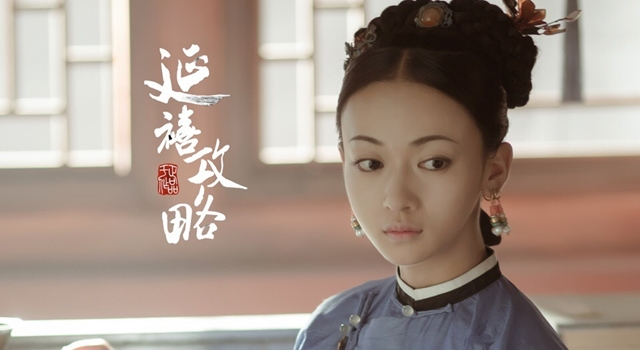
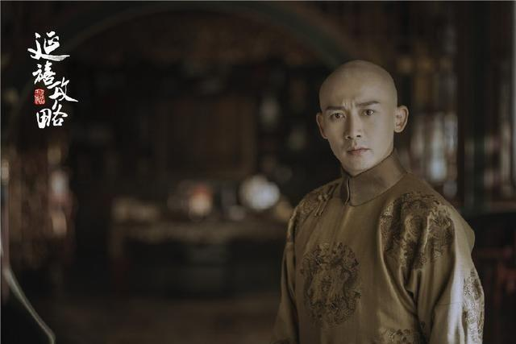
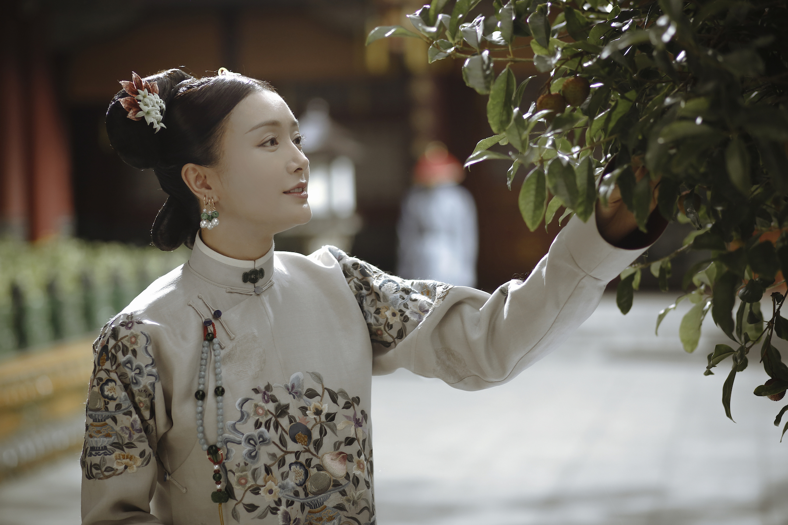
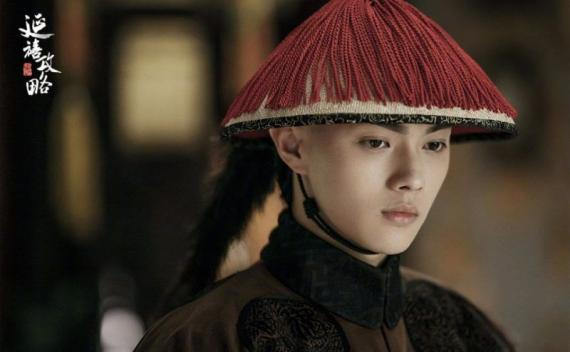
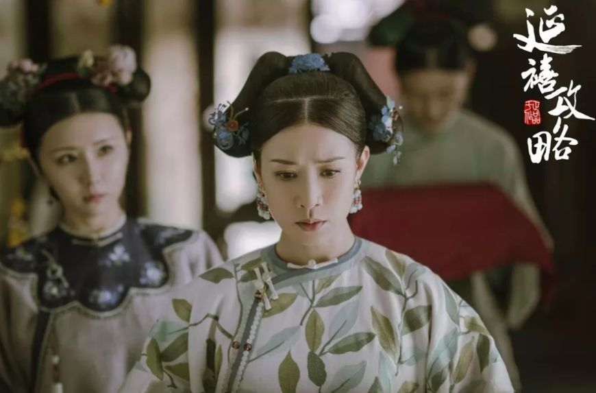

魏瓔珞
正直堅強，機智靈敏。母親生其而亡，姐姐魏瓔寧代母職，感情要好。
為調查姐姐死亡原因，入紫禁城為宮女。
愛新覺羅·弘曆
為乾隆皇帝，他在位期間，清朝達到康乾盛事以來最高峰。


富察·容音
溫雅端莊，賢良淑德，雖出身名門望族卻恭儉，平居冠通草絨花，不御珠玉。
與魏瓔珞亦師亦友，相伴相持，將其看做了自己的希望。
富察·傅恆
富察氏孝賢純皇后的弟弟，出身於名門，是乾隆身邊舉足輕重的人物。
被瓔珞利用報仇，卻喜歡上她。始終放不下瓔珞，並默默守護著她。


輝發那拉·淑慎
前期性格溫柔和順，淡泊善良，後期性格心思挺重，陰險歹毒。
在高寧馨煽風點火下，導致家族生變而黑化。
高寧馨
善崑曲，又因父親治水有功，而深受皇上寵愛。
事事與皇后富察容音作比較，更嫉妒皇帝偏愛皇后。